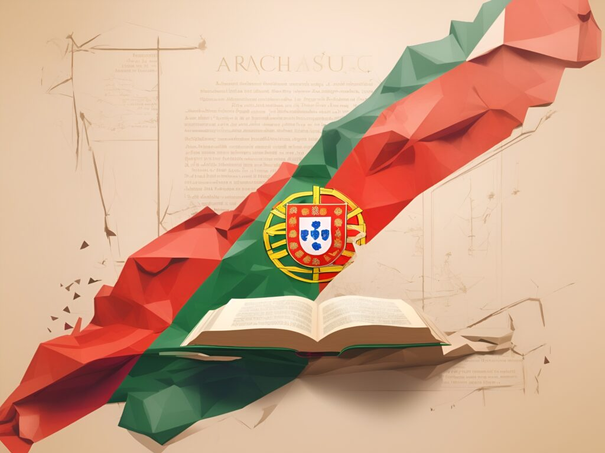

Co by si rozhodně návštěvník Portugalska neměl nechat ujít, je živý koncert hudebního stylu zvaného fado. Ve větších městech existuje nespočet příjemných barů, kde po večerech k poslechu u skleničky vína hrají malé skupinky kytaristů (používají dvanáctistrunný nástroj) a charismatických zpěváků. Projev je nesmírně emotivní, interpret si pohrává s dynamikou a tempem. Náplní melancholických textů písní bývá stesk po milovaném člověku, sociální nerovnost, často např. těžký úděl námořníka či víra v lepší budoucnost. Nejslavnější interpretkou je Amália Rodrigues. Všeobecné oblibě se těší portugalský folk, mezi mladými dále také pop, hip hop, trance a zajímavá energetická bomba ovlivněná africkými rytmy – kuduro (např. multietnická skupin Buraka Som Sistema).
Portugalci jsou právem hrdí na svou bohatou literaturu. Největším dramatikem byl Gil Vicente, který zobrazil portugalskou společnost 16. století ve více než čtyřiceti hrách. Dnes se díky tomu po něm jmenuje jeden z portugalských fotbalových klubů. Slavný epos Lusovci pojednává o velkolepé éře zámořských objevů Nejzásadnějším literárním dílem už po staletí zůstává národní epos Lusovci oslavující dobu zámořských objevů. Je ceněn pro nadčasovou literární kvalitu a vysoký patriotismus, na který si Portugalci potrpí. Jak Vasco da Gama, opěvovaný v díle, tak i jeho autor Luis de Camões, jsou dnes uznáváni jako národní hrdinové. Devatenácté století v duchu realismu patřilo skvělým romanopiscům a novelistům. Zbožný a počestný způsob života narušovaný
nevyzpytatelným osudem skvěle popisuje například Almeida Garret (Mnich Luís da Souza), Eca da Queiroz (Zločin pátera Amara) nebo Camilo Castelo Branco (Zhoubná láska). Ve dvacátém století se zrodil největší portugalský básník a velmi komplikovaná osobnost – Fernando Pessoa. Navenek žil nevzrušivý život cizojazyčného korespondenta obchodní společnosti, ale znal kabalu, zajímal se o astrologii a hlásil se k rosenkruciánské církvi. Pro jeho dílo, psané pod čtyřmi různými identitami, je typický bohatý symbolický jazyk, ezoterie a hluboké myšlenky o lidském bytí (Kniha neklidu, Heteronyma,…). Mezi významné spisovatele současnosti patří Antonio Lobo Antunes nebo zatím jediný portugalský nositel Nobelovy ceny za literaturu, José Saramago. Tipy, co si přečíst Slepota (José Saramago) – strhující, naturalisticky líčený thriller o apokalyptické vizi společnosti. Slepota, která se šíří jako epidemie, má paradoxně otevřít oči těm, kteří už slepí byli… Výtečná alegorie, která ve vás zanechá hluboký dojem ještě na dlouho. Zločin pátera Amara (Eca de Queiros) – boj mezi vírou v Boha a tělesnou přitažlivostí. Queiros skvěle vybarvil charaktery hlavních postav a s brilantní ironií kritizuje maloměšťácké prostředí a nemilosrdné praktiky zkorumpované církve.
Další součástí portugalské kultury tvoří býčí zápasy, tzv. touradas. Od proslulých španělských zápasů se liší tím, že býk v závěru není usmrcen. Událost zahajují tradičně odění jezdci zvaní cavaleros. Na svých koních předvádí v rytmu latinských rytmů náročné krokové variace. Když je pak do arény vpuštěn býk, přicházejí na scénu bandaleiros, kteří pomocí růžových pláštěnek nasměrují býka k jezdcům, kteří mají za úkol bodnout zvíře několikrát do šíje, aby otupili jeho motoriku. V závěru přibíhají forcados, mladí chlapci v zelených kamizolách, kteří mají býka zpacifikovat. Jeden z nich mu mrštně skočí na hlavu a zakryje mu oči, další se mu vyhoupnou na záda a jiní chytí za ocas. Býk je za malou chvíli klidný a odchází s dalšími býky z arény. Že je to všechno velmi nebezpečné, není třeba dodávat. Účastníci jsou proto národními hrdiny a publikum je miluje. Pro nás je to poněkud zvláštní druh zábavy, ale v Portugalsku jsou touradas stále velmi oblíbené. V zemi je asi sto padesát kolbišť, z nichž nejznámější je Campo Pequeno v Lisabonu.
Velmi zajímavým zážitkem je přítomnost na některé z četných portugalských slavností a svátků (festas). Mezi nejživější patří studentské tradiční ceremonie. Jednou z nich je Semana académica, studentský týden plný koncertů a tradic. Jeho vrcholem je závěrečný průvod městem, v němž má každý univerzitní obor stejnou barvu trička a vlastní nazdobené vozítko plné alkoholických nápojů a vody, kterou se studenti za všeobecného veselí a tance navzájem polévají. Konec školního roku oslavuje Gueima das Fitas („pálení stužek“), která probíhá ve všech univerzitních městech, nejvyhlášenější je v Coimbře. Tisíce studentů v tradičních černých kápích se sejdou u serenády a dalších kulturních a sportovních akcí doprovázených zajímavými zvyky. Karnevalem v únoru ožívají i uličky těch nejmenších měst Karnevalem v únoru ožívají i uličky těch nejmenších měst Průběžně po celý rok se slaví svátky svatých (romarias). Ve městě Braga se v dubnu koná Santa Semana (Týden svatých), proslavený procesím s bosými poutníky. Na svátky patronů každého regionu se konají poutě a průvody, nejslavnější je Festa de São António v Lisabonu (12.–13. 6.) a Festa de São Joao v Portu (23.–24. 6.). Mezi další patří květnová Festa das Cruzes (Slavnost všech křížů) v Barcelos, v červnu probíhá Corpo de Deus (Oslavy Božího těla). V únoru ulice ožívají karnevaly, na jaře se konají květinové slavnosti a festivaly tradiční hudby a zejména léto je dobou rozmanitých událostí spojených s býčími zápasy, lidovými tanci, sporty a rušnými soutěžemi. Portugalci své svátky milují a rádi vyhledávají příležitosti k zábavě a veselí.
Nový rok – na Silvestra se hoduje a pije, ve zvyku je sníst 12 rozinek s přáním pro každý měsíc roku a po půlnoci se Nový rok vítá ohňostrojem a šampaňským. 1. ledna dopoledne chodí ulicemi skupinky prozpěvujících koledníků. Carnaval – karneval neboli masopust připadá na úterý před Popeleční středou. Kluby po celé zemi roztancují stovky lidí v maskách, klasické průvody v ulicích se pořádají hlavně na severu. Nazdobená vozítka, polonahé slečny vrtící se na vysokých podpatcích v rytmu samby a legrační kostýmy se s brazilskou verzí sice nedají srovnávat, ale zajímavá podívaná to je. Velký pátek (březen/duben). Velikonoce (Páscoa) jsou v Portugalsku nejvýznamnějším církevním svátkem. Slaví se celý týden a v každém regionu trochu jinak. Tisíce poutníků si dá dostaveníčko v městě Braga, kde sídlí arcibiskup. Po celé zemi se konají monstrózní procesí se sochou Ježíše v čele. Knězi, bosí kajícníci zakuklení v kápích, děti ve zdobných tradičních šatech, svíčky a lucerny, květinami posypané cesty. Nejdůležitější procesí se koná o velikonoční neděli. Ve vesnicích zastaví u každé domácnosti, aby kněz svým „ovečkám“ požehnal výměnou za tradiční folar. Tento mazanec se zapečeným vejcem ve skořápce se na severu plní masem a na jihu najdete jeho sladkou verzi se skořicí, medem a citronem. Jako doprovodné akce se pořádají koncerty, čtení biblických textů a aktivity pro děti. Z oken a balkonů visí dlouhé barevné látky jako dekorace. Lidé navštěvují své příbuzné a společně hodují na oslavu Ježíšova života. Na Velký pátek nejí maso, aby si to vynahradili v neděli pečeným jehnětem. Novodobým zvykem je díky globalizaci hledání čokoládových pamlsků, které dětem schoval na zahradě velikonoční zajíček. Výročí karafiátové revoluce – čím je pro Čechy „sametová revoluce“, tím je pro Portugalce karafiátová revoluce. 25. dubna 1974 Portugalci ukončili diktaturu Antonia Salazara i jeho bezvýchodné boje v koloniích. Nenásilně a symbolicky – s karafiáty v hlavních pušek. V předvečer svátku všechna rádia spustí ve stejný moment revoluční píseň "Grandola Vila Morena", při které zamrazí i tomu, kdo ten významný den nezažil. Následují oslavné ohňostroje a následující den je spojen s nákladnými přehlídkami a pestrým programem.
Boží tělo – šedesát dní po velikonoční neděli se připomíná poslední večeře před Kristovým ukřižováním. Oslavy s tím spojené se v Portugalsku už od středověku nemění. Po mši se do ulic vydá rozsáhlé procesí, v jehož čele nesou kněží s obřadnou úctou posvěcenou hostii, která reprezentuje Kristovo tělo. Celé to zpestřuje hudba, tanec a ohňostroje a další doprovodné akce jako např. středověké souboje symbolizující boj dobra se zlem. Camõesův den/Den Portugalska – 10. června se připomíná den úmrtí spisovatelské ikony Luis de Camõese v roce 1580, ale také oslavuje Portugalsko samotné. Lidé berou tento den jako příležitost sejít se, připomenout si své kořeny a především se pobavit. Pořádají se vojenské přehlídky, open-air party a koncerty v ulicích. Pompézně je Camõesův den slaven také v Kanadě početnou portugalskou komunitou. Nanebevzetí Panny Marie - 15. srpen patří dalšímu důležitému křesťanskému svátku. V kostelech se korunují sochy Panny Marie, královny andělů, na počest jejího nanebevzetí Bohem. V ulicích vyhrává dechovka, bubny a dudy. Den republiky – oslava svržení monarchie a vzniku portugalské první republiky se od roku 1910 připomíná 5. října. Konají se nejrůznější kulturní akce a leckdy také celonárodní protivládní demonstrace. Svátek všech svatých - 1. listopad patří všem křesťanským svatým, zejména těm, kteří nemají svůj „vlastní den“ během roku. Lidé se účastní ceremonií v kostelech, kapličkách či farnostech a nosí na hřbitov květiny a svíčky. Den nezávislosti – 1. prosince roku 1640 byla ve prospěch Portugalska ukončena po osmadvaceti letech válka s jeho uzurpátorským sousedem, Španělskem. Portugalci tehdy získali nezávislost. Konají se státem pořádané kulturní akce, ale pro lid tento svátek postupně ztrácí na významu. Neposkvrněné početí - v roce 1686 prohlásil velký panovník João IV. Pannu Marii neposkvrněného početí za svatou patronku Portugalska. Od té doby se 8. prosince na její počest konají mše. Ve Fatimě, kde se roku 1917 a poté ještě dvakrát zázračně zjevila, dochází až k masové hysterii. Boží hod (25. 12.) – viz další kapitolka
Čtyřiadvacátého prosince se večer po práci rodina sejde u stolu a zahajuje vánoční svátky hostinou zvanou consoada. Podává se vařená treska se zeleninou a speciální dezerty včetně bolo rei („královský koláč“), ve kterém je zapečená mince nebo jiný drobný předmět pro štěstí a v některém také fazole. Kdo ji najde, musí zaplatit koláč příští rok. V minulosti bývalo zvykem nechat u stolu volná místa a talíř s něčím dobrým k snědku také pro duše zesnulých bližních. Po večeři děti nechají u krbu nebo u stromečku botu a čekají na dárky, které jim Pai Natal donese o půlnoci. Pai Natal je v podstatě Santa Claus – bělovousý dědeček v červeném oblečku. Postupně nahradil úlohu Ježíška (Menino Jesus), i když některé děti alespoň věří, že „Santovi“ pomáhá. Rodiny ve svých domovech instalují krásné betlémy, přičemž figurku Ježíška do nich přidají až po štědrovečerní Missa do Galo („Kohoutí mše“). V kostelech, ale i mnoha domácnostech je typickým symbolem hořící dubové polínko. Dvacátého pátého chodí od domu k domu zpívající koledníci s obrázkem Ježíška a k obědu se podává krocan a spousta dezertů. Oslavy končí až 6. ledna s příchodem Tří králů a do té doby se lidé setkávají, veselí, hodují a pijí.
Díky prohlubující se ekonomické krizi portugalská vláda nejen, že šetří, kde se dá, škrtá, privatizuje a zvyšuje daně, ale rozhodla se také zrušit čtyři státní svátky. Portugalci totiž musí začít pořádně pracovat, aby podpořili konkurenceschopnost a výkonnost své země. Po konzultaci s Vatikánem přijde lid o Boží tělo, Den republiky, Svátek všech svatých a Den nezávislosti na Španělsku. A to od roku 2013 po dalších pět let. Pak se prý uvidí…